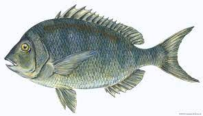

Body laterally compressed and thick, round abdomen; standard length 2.1-2.8 times body height and 3.1-4.1 times head length; length of head larger than body height; small and short head; short snout; terminal mouth and arch shaped; lower jaw slanting upwards slightly; thick lip; no palpus; 37-54 gill rakes on the first outer gill arch, gill rake long; one row of pharyngeal teeth on each side, laterally compressed, formula 4--4; 27-30 scales in lateral line.